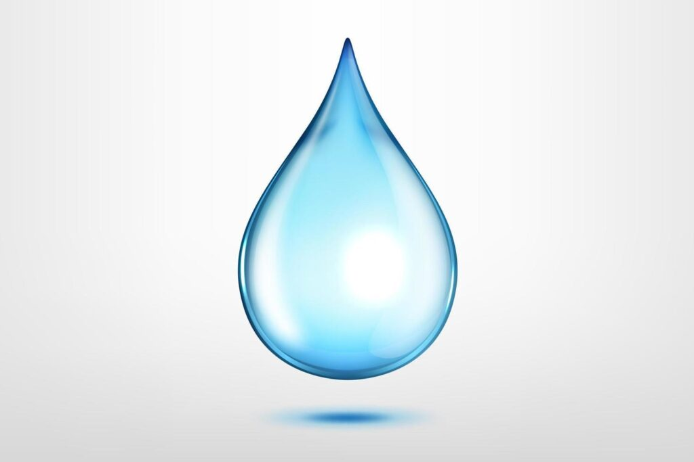

IMPORTANCIA DEL AGUA
El agua es un elemento natural fundamental para el desarrollo de la vida. Es una de las sustancias más abundantes del planeta y cubre la mayor parte de la Tierra. Todos los seres vivos necesitan agua para vivir y desarrollarse, y es fundamental para la mayoría de las actividades económicas que realizan los seres humanos. No solo es necesaria para la hidratación humana y la producción de alimentos, sino que también juega un papel crucial en numerosos procesos industriales y de generación de energía.
Además, el abastecimiento del agua influye directamente en la salud de las personas, ya que el consumo de agua no segura puede provocar graves enfermedades como la diarrea, el cólera y la hepatitis A.
El agua es fundamental para el desarrollo de la biodiversidad en la Tierra. Los ríos, lagos y océanos albergan una gran variedad de formas de vida, y los ecosistemas terrestres dependen de la disponibilidad de agua para mantener su funcionalidad y estabilidad.
Además, el agua puede contribuir a desencadenar problemas ambientales muy severos. La caída de gran cantidad de agua de lluvia en poco tiempo puede producir inundaciones, mientras que extensos períodos sin precipitaciones pueden generar sequías extremas
PARA LOS SERES HUMANOS
El proceso de termorregulación del cuerpo humano depende del agua. Cuando el cuerpo se calienta, se produce transpiración para liberar calor, lo que ayuda a mantener la temperatura corporal dentro de rangos saludables.
El agua es el medio de transporte de nutrientes en el cuerpo. Permite que los nutrientes se disuelvan y se transporten a través de la sangre a las células, donde se utilizan para la energía y el crecimiento. Además, el agua facilita la eliminación de productos de desecho del cuerpo a través de la orina y las heces.
PARA LAS ACTIVIDADES ECONÓMICAS
El agua es fundamental para el desarrollo de la mayor parte de las actividades económicas. Casi el 90 % del consumo de agua en el planeta corresponde alas actividades económicas, y solo un 12 % se utiliza de forma domiciliaria.
Agricultura. Representa el 70 % del uso del agua en el planeta. La agricultura es uno de los sectores económicos más dependientes del agua, ya que es esencial para el riego de cultivos. La escasez de agua o su gestión inadecuada pueden impactar negativamente en la productividad agrícola y en el abastecimiento de alimentos.
Industria. Diversos procesos industriales requieren de grandes cantidades de agua para la refrigeración, el lavado y la producción. Las industrias químicas, textiles, alimentarias y manufactureras dependen en gran medida del acceso a fuentes de agua abundantes.
Minería. La minería es otra industria que utiliza grandes cantidades de agua en procesos como la extracción, el procesamiento y el transporte de minerales.
Energía. Las plantas de energía hidroeléctrica, térmica o nuclear dependen directamente del suministro de agua. La refrigeración de centrales eléctricas y la generación de vapor para la producción de electricidad son procesos que requieren de grandes cantidades de agua
Transporte. Los sistemas de transporte a través de ríos y océanos son esenciales para el comercio internacional y el transporte de mercancías.
Turismo. Muchas actividades y atractivos turísticos se encuentran en entornos acuáticos como playas, lagos y ríos. La disponibilidad de agua limpia es esencial para el turismo
